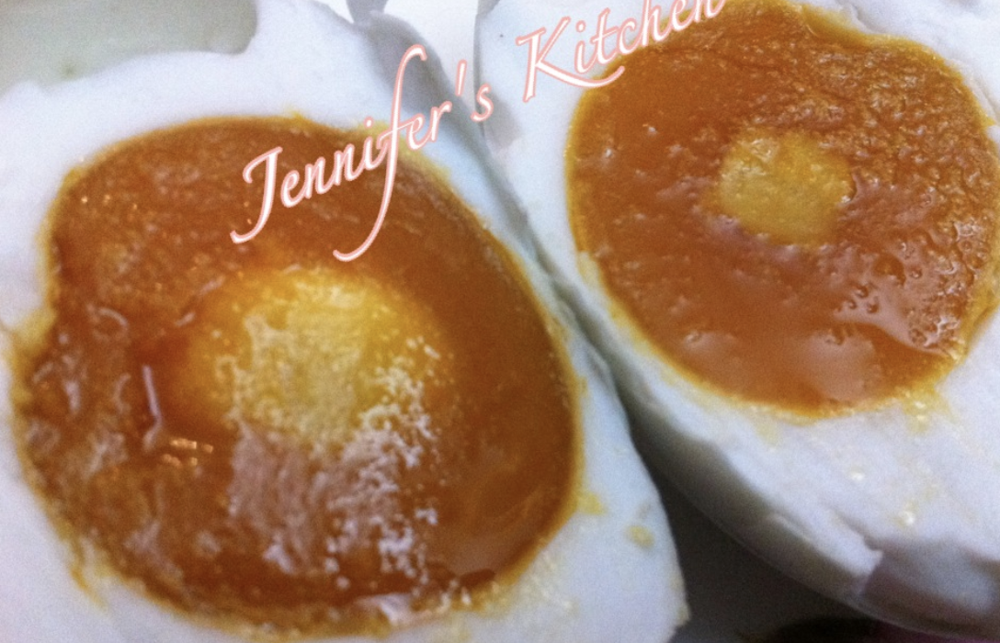
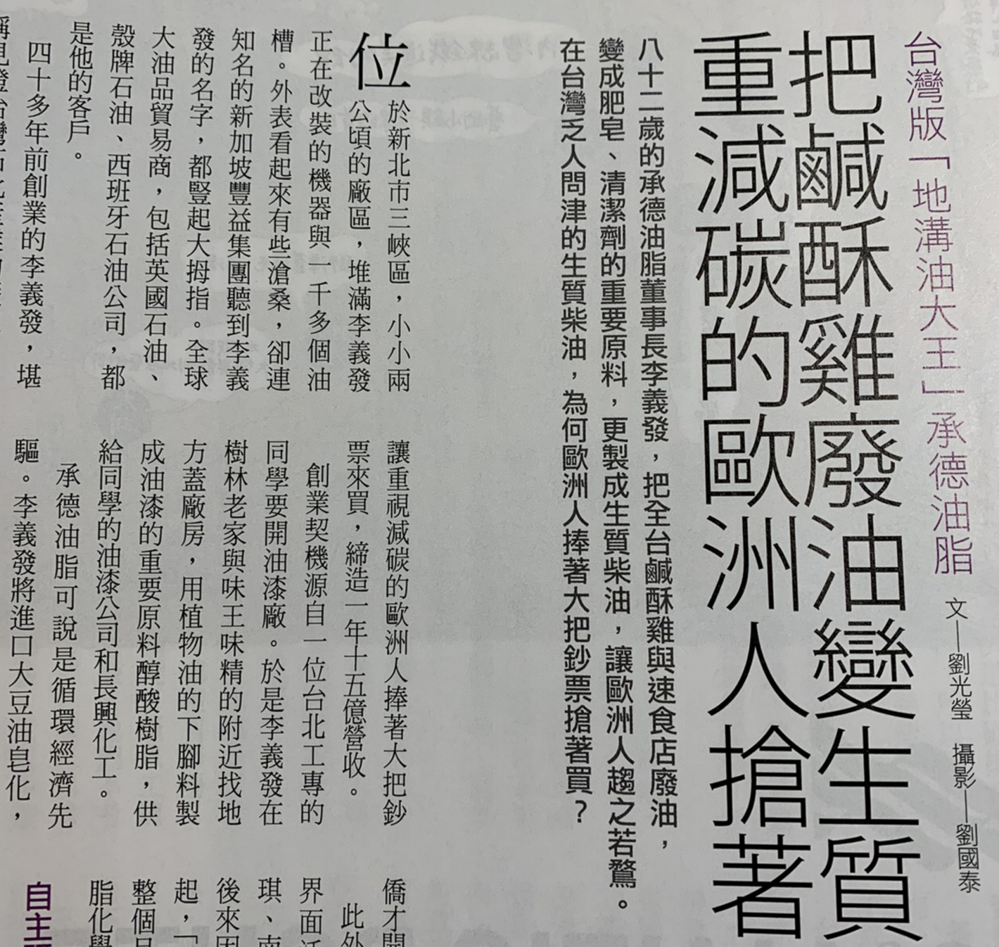
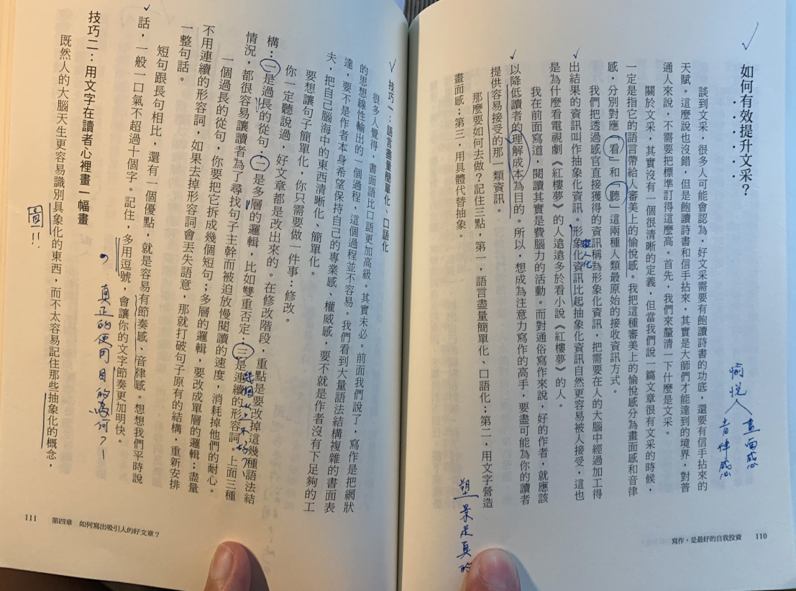
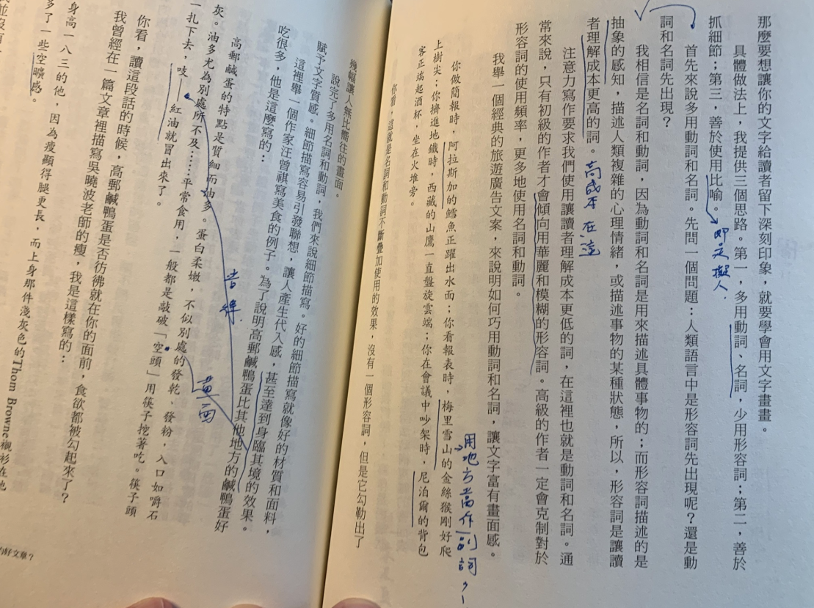

[啟發] 寫作的文采 | Improving Qualities of Good Writing
Status: Published Medium
什麼是文采
此次心得是來自<寫作，是最好的自我投資>一書中的片段內容，分享於大家。什麼是文采？往往在寫作時，都希望自已的文章可以擁有一定的水準，最好像大師們一樣。而什麼是大師們的文采？更具體一點，可能是滿滿的成語，可能是滿滿的引經據典。
從字典上解釋：文辭方面的才華。更直觀的說法，是指它的語言帶給人審美上的愉悅感。
我們可以把這種審美上的愉悅分為畫面感和音律感，分別對應「看」、「聽」這兩種人類最原始的接收資訊方式
愉悅感怎麼定義
愉悅感來自畫面感和音律感
我們把感官直接獲得的資訊稱為形象化資訊，另外對比的則是抽象化話。寫作需要的是形象化！把原本讀書腦中還很抽象的概念將 → 它具體化，如此自然也會讓人自更容易接受，這也是為什麼電影版<哈利波特>總是比看小說版的<哈利波特>還要多
降低讀者理解成本
另外一個重點，一個好的作者，就應該以降低讀者的理解成本為目的。盡可能為你的讀者提供容易接受的資訊。
那麼要如何去降低理解成本？請記住三點
- 語言要簡單化、口語化
- 文字要營造畫面感(塑景，讓腦中有個畫面)
- 用具體代替抽象(講一個代表物，細細描述它)
先談談技巧一：其實寫作是一個把思想編輯成網狀的輸出的一個線性過程，這個過程並不容易。因為讀都的收入一句一句話吸收，因此首先我們要讓句子簡單化，你只要做一件事：修改
你一定聽說過，好文章都是修改出來的。這修改階段，重點是要改掉這幾個語法結構
- 過長的子句(clause)
- 多層的邏輯，比如雙重否定
- 連續的形容詞
先說明上面三種情況很容易讓讀者，為了尋找句子主軸而被迫放慢閱讀的速度，消秏掉他們的耐心。一個過長的子句，你應該要把它拆開成幾個短句。多層的邏輯則要拆成單一層的邏輯；盡量不用連續的形容詞，如果去掉形容詞會丟失語意，那就打掉原有句子結構，放棄過長的形容詞，重新安排一整句話。
技巧一：語言要簡單化、口語化 → 閱讀節奏感
短句跟長句相比，還有一個優點，就是有節奏感、音律感。想想我們平時說話，一般一口氣說話不超過十個字。在文章表達中，記住，多用逗號，會讓你的文字節奏更加明快。
研究一下逗號的真正的用意…
技巧二：用文字建立一幅畫
即然人的大腦天生更容易識別具象化(圖)的東西，而不太容易記他那些抽象化的概念。
那麼你就應該給讀者留下深刻印象，就得多善用文字構圖(這四個字也很抽象XD)。
photo by: website:< People who daydream are more intelligent: study>
但我立馬提具體的做法，有三個思路
- 多用動詞、名詞，少用形容詞
- 善於抓細節
- 善於用比喻(即是擬人法)
形容詞是疊加理解成本
因為動詞和名詞是描述具體的事物，而形容詞是描述抽象的感知
舉例來說，描述人類復雜的心理情緒，或描述事物的某動作狀態，所以形容詞是會疊高閱讀的理解成本
書中有提到注意力寫作(前面沒有提到)要求我們使用更低的成本的詞彙，即是強調使用動詞和名詞。作者觀察到，只有在初級的寫作朋友會傾向用豪麗和模糊的形容詞。很有經驗的寫作者一定會克制對於形容詞的使用頻率，而更多的使用名詞和動詞
我自已的理解：我想可以從英文文法中的形容司子句，它的存在就是可有可無，也不會影響原本句子的本意，就是這樣意涵吧
塑景 | 細節描寫
好的細節就好像好的材質和素料，賦予文字質感，細節描寫容易引發聯想(塑景)，讓產生帶入感，甚至達到身臨其境的效果。
塑景的過程好比brianstorming，大伙把心中的idea說出來體體化
書中舉一個美食作家曾祺的例子
高郵鹹蛋的特點是質細而油多。蛋白柔嫩，不似別處的發乾，發粉，入口如嚼石灰。油多尤為別處及所不及…平常食用，一般都是敲敲「空頭」用筷子挖著吃。筷子頭一札下去。吱—— 紅油就冒出來了。

photo by: Jennifer’s Kitchen: 自製漏油鹹蛋
你看，這段話的時候，高郵鹹蛋是否彷彿就在你的眼前，食慾都被勾起來了？
天下雜誌也是如此
另外我自已也訂閱<天下雜誌>，長期閱讀下有觀察到每期的人物採訪亦或是故事報導，文章的開頭都有一段的場景描述，如擷圖：位於三峽區，小小兩公頃的廠區，堆滿了改裝的機器與上千個油槽…

photo by: <天下雜誌 2019 10月刊>
結論
讀完這篇文章，你可以知道用畫面感和音律感來提升你的文章水準，而好的文章品是易讀和易理理，使用的手段可以用控制文章結構提高閱讀節奏感，另外由不同的面向細細描述一種事物，也容易讓讀者腦中塑景，使其更深入期境。
TOPIC 1:有具像化，也有抽象化，我們談表達…
refer 羅胖文章
TOPIC 2: 中文和英文的逗號

